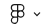
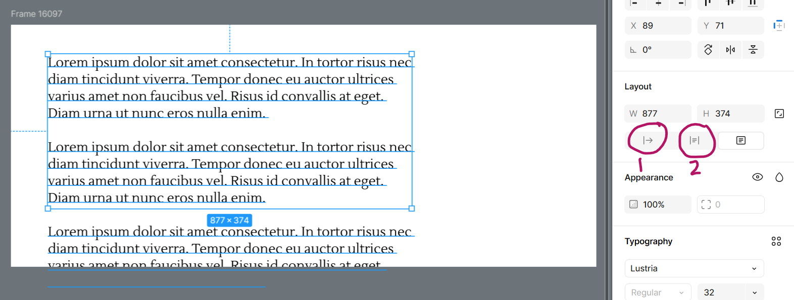
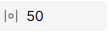
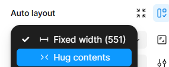
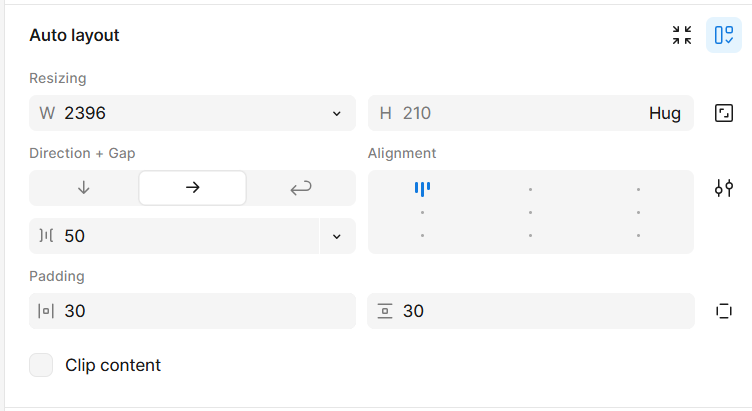
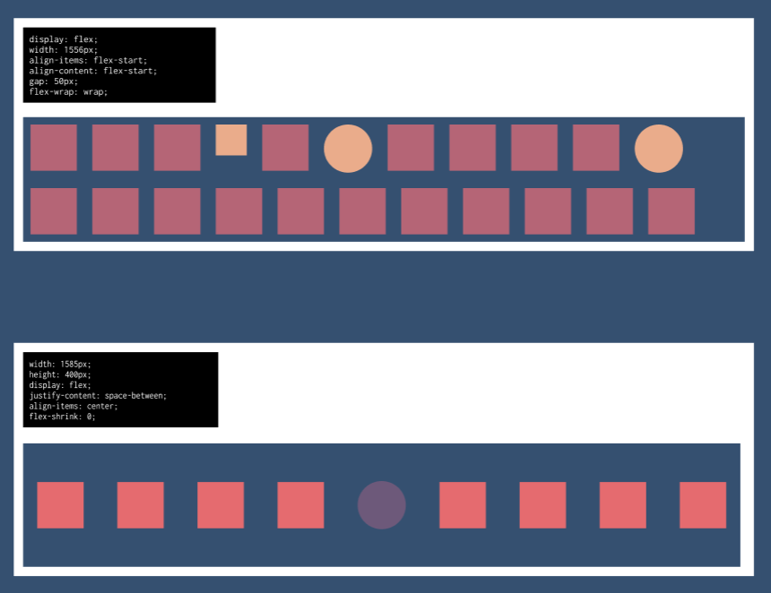
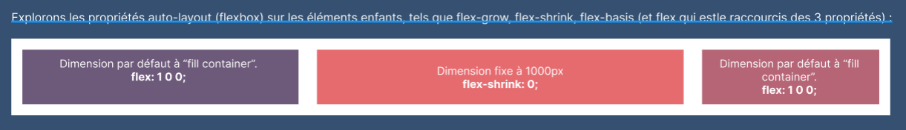

Séance : De Figma à Visual Studio Code – Auto-Layout et Flexbox
🎯 Objectifs :
- Comprendre et utiliser l'auto-layout dans Figma.
- Explorer le Dev Mode et la génération de code CSS (Flexbox).
- Intégrer le code généré dans Visual Studio Code et l’adapter pour une vraie interface web.
- Comprendre l’usage de Figma en industrie.
📌 Pourquoi utiliser l’auto-layout ?
- Facilite la gestion des espacements, alignements et tailles des éléments.
- Simule le comportement CSS (Flexbox).
- Optimisé pour le responsive design.
- La page s'ajustera de façon fluide au contenu, peu importe sa longueur, sa largeur.
Pour mieux comprendre l'auto-layout et son lien avec le principle de flexbox, veuille afficher les libellés dans les panneau de configuration de Figma
 / View / Property labels
🛠️ Démonstration : cadre de texte dynamique et bouton en auto-layout
 Celle-ci s'ajustera automatiquement à la taille du texte, qu'on ajoute ou qu'on enlève un paragraphe. Sa dimension est maintenant dynamique. Créer un bouton (outil rectangle et arrondir les coins) et y inscrire du texte. À l'aide de l'outil aligner qui se trouve dans le panneau Position à droite, centrer verticalement et horizontalement le texte dans le bouton. Sélectionner le bouton et le texte et appliquer l'auto-layout (soit par le panneau layout à droite ou soit par le raccourci clavier Shift+A). Ajuster la padding horizontal à 50px  Réduire la largeur du bouton plus petit que le texte et observer comment le texte s'ajuste à la taille du bouton. S'ajuste-t-il? Non. Il faudra changer la largeur fixe du bouton pour hug content.  Changer maintenant le texte du bouton pour un texte plus long, observer ce qui se passe. La dimension du bouton s'ajuste maintenant à la largeur de son contenu.
Le panneau auto-layout dans Figma
- Capsule vidéo partie 1:
- Activation de l'auto-layout sur des contenus sélectionnés.
- Gestion de la dimension du conteneur parent.
- Principe du hug content.
- Capsule vidéo partie 2:
- gap (espace entre les éléments enfants)
- flex-direction (row, column)
- flex-wrap (no-wrap, wrap)
- Alignement (flex-start, flex-end, center etc)
- padding (marge intérieure du conteneur parent)
- clip-content (overflow: visible ou hidden)
Suite de la démo
Flexbox sur parent: Autres exemples de placements en explorant le panneau d'auto-layout
Explorons aussi les propriétés auto-layout (flexbox) sur les éléments enfants, tels que flex-grow, flex-shrink, flex-basis (et flex qui est le raccourcis des 3 propriétés).
🔍 Présentation du Dev Mode
- Activer le mode développeur dans Figma.
- Explorer les propriétés CSS générées.
- Comprendre comment Figma traduit l’auto-layout en
display: flex.
🛠️ Démonstration :
- Sélectionner un élément et voir son code CSS généré.
- Analyser quelques exemples.
- Comparer avec le code qu’on écrirait soi-même.
📌 Objectif : Recréer l’interface avec un code propre.
🛠️ Démonstration :
- Créer un fichier
index.htmletstyle.css. - Structurer l’HTML (sections, divs, classes).
- Appliquer les styles avec Flexbox en s’inspirant du code généré par Figma.
- Ajuster les styles pour améliorer la propreté et la maintenabilité du code.
Extention à installer maintenant sur vos Visual Studio Code
OUTIL
Figma for VS Code
Extension pour Visual Studio Code qui permet d'importer des designs Figma et de les convertir en code CSS.
🛠️ Workflow en entreprise :
- Designer → Création des maquettes dans Figma avec Auto-Layout.
- Développeur → Exploration en Dev Mode pour récupérer les propriétés.
- Intégration → Transposition dans HTML/CSS en adaptant le code généré.
📌 Bonnes pratiques :
- Nommer et organiser ses calques proprement.
- Utiliser des styles globaux et des composants réutilisables.
- Travailler avec des variables CSS et des classes bien structurées.
EXERCICE
Carte auto-layout et convertie en HTML/CSS
Vous devrez configurer la carte est ses éléments en auto-layout dans Figma, explorer le code Flexbox généré via le DevMode et intégrer le tout en HTML+CSS dans VS Code.
L'auto-layout dans Figma
+ Fichier de travail pour suivre l'atelier